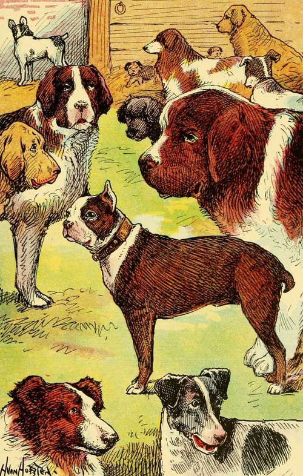

Chapter III. A Pleasant Home For Punch
Description
This section is from the book "Dogs And Puppies", by Frances Trego Montgomery.
Chapter III. A Pleasant Home For Punch
The next to come for one of Mother Gypsy's puppies was a little girl of twelve, with a heart as big as her head, and she bid fair to be as over particular as the French maid had been careless.
She selected a little white puppy by the name of Punch, with two black ears, and a little black stubby nose and the broadest, most beautiful forehead you ever saw.
It was very hard for her to make up her mind which to take, this white puppy, which was marked exactly like his illustrious grandfather, or a brindle, with white neck band, shirt front, and four white socks.
At last she decided on the white puppy, because he ran to her and made friends with her at first, and acted as if he had known her all his short life. In fact, he was most familiar, for the first thing he did was to untie her shoes and pull and gnaw at the strings. When she picked him up, he lay perfectly still over her shoulder with his nose buried in her neck.
If a dog's life ever fell in a pleasant place, this little puppy's surely did. He was fed as regularly as if he were a baby, and not on dog biscuits alone, as most dogs are, until they are so sick of them that they could die of starvation rather than eat them, but on oat meal gruel, chicken and turkey broth with dry bread broken into it, a little apple now and then, or a puppy biscuit soaked in warm water.
Then too, he had a dog basket with an eiderdown pillow in it, and a shawl, all his own, to be thrown over him when the weather was cold,, and such fun as he had three times a day when his little mistress would play and romp with him. She would lie on the floor, let him run over her and lick her face and hands, and chew her hair.
But life was not all play, even for Punch. His little mistress had an older brother, who was determined that Punch should be "educated as a gentleman should be," as he said. So part of each day he spent teaching Punch tricks.
HE WAS SOLD TO A BREEDER WHO TOOK HIM TO A STABLE WHERE THERE WERE A GREAT MANY OTHER DOGS.
First he taught him to jump over a cane when he held it out straight. It took a long time for playful little Punch to learn that he must obey. He usually wanted to frisk about. But after a great many lessons he learned that he must do what he was told. And besides, he found that when he had done his best, he was always given some little dainty to reward him.
And so, in time, he became quite a "trick dog," and could do a great many things that most dogs never will be able to do. He could play "possum," which is to pretend to be dead, and he could say his prayers.
And his reputation for intelligence spread so far over the country that some very learned men came to see him. They could not believe that the stories told of him were true, and wanted to see for themselves. So with his mistress and the professors looking on, Punch was put through all of his tricks. From a great many wooden letters he selected those that formed his name. He counted up to fifteen, first barking once, then twice, and so on. It would take too long to tell you of all the things that Punch had learned to do, but it is needless to say that the visitors were delighted with him.
And after they had gone, his mistress put her arms around his neck, and said: "Was there ever so wise a dog?"
And you mustn't think that Punch did not know what she said. Why, he was so proud of himself that he would hardly look at the little Fox Terrier next door when he chanced to meet him that afternoon, although ordinarily they were great friends.
Continue to: